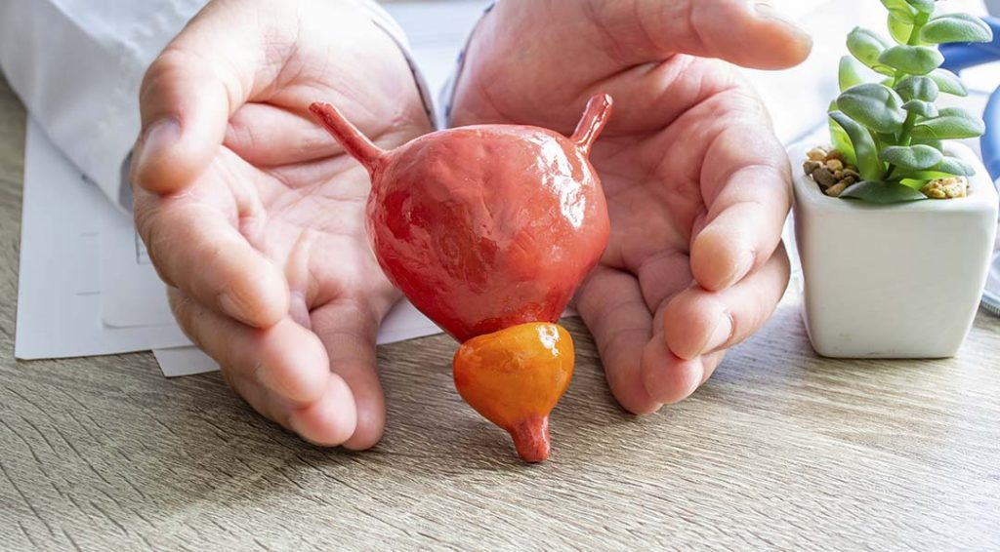

Alguns tipos de câncer de próstata crescem lentamente. Em alguns casos, é recomendado monitoramento. Outros tipos são agressivos e necessitam de radioterapia, cirurgia, terapia hormonal, quimioterapia ou outros tratamentos.
Cuidados Médicos
Monitoramneto de mudanças ou melhoras
Procedimento médico
Radioterapia de raios externos, Braquiterapia e Radioterapia
Cirurgia
Prostatectomia radical laparoscópica, Radiocirurgia, Prostatectomia, Cirurgia robótica e Cistoprostatectomia
Medicamentos
Saúde óssea, Hormônio e Medicamento para retenção urinária
